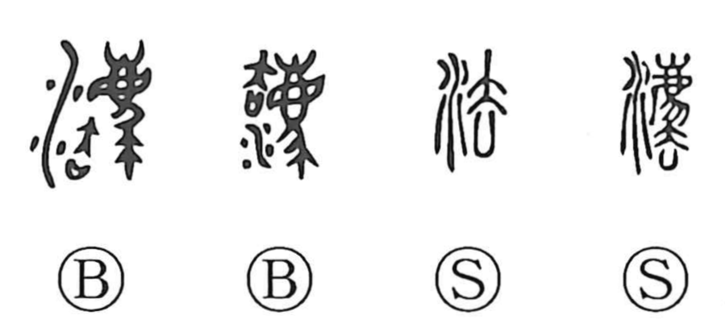

Explanation
Shirakawa explains that the original form was 灋, built from the water sign, the sacred beast 廌 (a sheep-like “ordeal animal” used in trials), and 去. Here 去 combines a figure with outstretched limbs (大) and an open covenant vessel (凵) whose lid has been removed, signaling that a false oath has been exposed. In ancient adjudication, parties swore before the gods and underwent divine ordeal; when guilt was revealed, the loser was expelled—cast into the waters—together with the ordeal beast and the invalidated covenant chest. Hence 灋 first meant to discard or banish, a sense reflected in bronze texts such as 勿灋朕命, “Do not cast away my command.” Later the 廌 component was abbreviated to yield 法, which came to signify the rule to be followed—law and regulation—and by extension following a rule and the means or method for doing so.